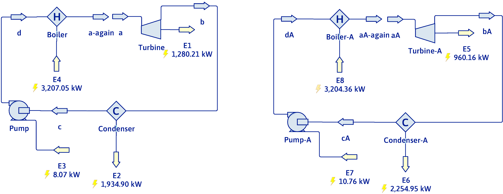

Boil, Expand, Condense, Repeat: The Rankine Cycle in Action Part 1

Slide TBD
Carnot steam cycle
Summary
\[\eta=1-\frac{T_\mathrm{cold}}{T_\mathrm{hot}}=1-\frac{373.15}{473.15}=0.2113\]
\[-W_\mathrm{net}=410.0\ \mathrm{kJ/kg}\]
\[Q_\mathrm{hot}=1939.8\ \mathrm{kJ/kg}\]
\[Q_\mathrm{cold}=-1529.8\ \mathrm{kJ/kg}\]
Spreadsheet
What are the engineering problems with the Steam Carnot cycle?
The Rankine cycle
\[\Delta H_\mathrm{pump}=-W_{s}=V\Delta P\]
The process from b to c is now isobaric instead of isothermal.
Pump from a to b now only compresses liquid.
Rankine Cycle Example
A steam power plant operates with steam entering the turbine at 80 bar and 500\(^{\circ}\)C. The condenser operates at 44\(^{\circ}\)C.
- Calculate the thermal efficiency.
- What is the water circulation rate for a net power generation of 80 MW?
Data needed from the steam tables:
@ 44\(^{\circ}\)C and 0.091118 bar: \(\hat{H}_{l}\), \(\hat{H}_{v}\), \(\hat{S}_{l}\), \(\hat{S}_{v}\), \(\hat{V}_{l}\)
@ 500\(^{\circ}\)C and 80 bar: \(\hat{H},\hat{S}\)
At 44\(^{\circ}\)C and 0.091118 bar
\(\hat{V_{l}}=0.0010095\mathrm{\frac{m^{3}}{kg}}\) \(\quad\) \(\hat{H}_{l}=184.26\mathrm{\frac{kJ}{kg}}\) \(\quad\) \(\hat{H}_{v}=2580.7\mathrm{\frac{kJ}{kg}}\)
\(\hspace{20cm}\) \(\hat{S}_{l}=0.62547\mathrm{\frac{kJ}{kg~K}}\) \(\quad\) \(\hat{S}_{v}=8.1816\mathrm{\frac{kJ}{kg~K}}\)
At 500\(^{\circ}\)C and 80 bar
\(\hat{H}=3399.4\mathrm{\frac{kJ}{kg}}\)
\(\hat{S}=6.7264\mathrm{\frac{kJ}{kg~K}}\)
Pump
\[\frac{\dot{W_{s}}}{\dot{m}}=\Delta\hat{H}=\hat{V}\Delta P\]
\[=0.0010095\mathrm{\frac{m^{3}}{kg}}(8000\mathrm{~kPa}-9.1118\mathrm{~kPa})=8.067\mathrm{\frac{kJ}{kg}}\]
\[\hat{H}_\mathbf{b}=\hat{H}_\mathbf{a}+\Delta\hat{H}=184.26\mathrm{\frac{kJ}{kg}}+8.067\mathrm{\frac{kJ}{kg}}=192.3\mathrm{\frac{kJ}{kg}}\]
Boiler
\[\Delta\hat{H}=\frac{\dot{Q}}{\dot{m}}=\hat{H}_\mathbf{c}-\hat{H}_\mathbf{b}=3399.4\mathrm{\frac{kJ}{kg}}-192.3\mathrm{\frac{kJ}{kg}}=3207.1\mathrm{\frac{kJ}{kg}}\]
Turbine
\[\frac{\dot{W_{s}}}{\dot{m}}=\Delta\hat{H}\]
\[\Delta\hat{S}=0\Rightarrow\hat{S}_\mathbf{c}=\hat{S}_\mathbf{d}\]
\[6.7264=x(8.1816)+(1-x)(0.62547) \quad x=\frac{6.10093}{7.5561}=0.8074\]
\[\hat{H}_\mathbf{d}=x\hat{H}_{v}+(1-x)\hat{H}_{l}\]
\[=0.8074(2580.7\mathrm{\frac{kJ}{kg}})+(1-0.8074)(184.26\mathrm{\frac{kJ}{kg}})=2119.2\mathrm{\frac{kJ}{kg}}\]
\[\Delta\hat{H}=2119.2\mathrm{\frac{kJ}{kg}}-3399.4\mathrm{\frac{kJ}{kg}}=-1280.2\mathrm{\frac{kJ}{kg}}\]
Efficiency
\[\eta=\frac{-W_\mathrm{net}}{Q_{bst}}=\frac{1280.2\mathrm{\frac{kJ}{kg}}-8.067\mathrm{\frac{kJ}{kg}}}{3207.1\mathrm{\frac{kJ}{kg}}}=0.3967=39.7\%\]
Flow Rate
\[-\dot{W}_\mathrm{net}=80,000\mathrm{\frac{kJ}{s}}=-\dot{m}W_\mathrm{net}\]
\[\dot{m}=\frac{-\dot{W}_\mathrm{net}}{-W_\mathrm{net}}=\frac{80,000\mathrm{\frac{kJ}{s}}}{1280.2\mathrm{\frac{kJ}{kg}}-8.067\mathrm{\frac{kJ}{kg}}}=62.88\frac{kg}{s}\]
The Takeaways
- The calculation of a realistic Rankine cycle starts by doing the calculation for an ideal or isentropic cycle, and adding in the effects of a turbine efficiency and a pump efficiency.
- Calculation of the final entropies at the outlet of the turbine, and the outlet of the pump are not necessary for the efficiency calculation. Doing the turbine exit is easy. Doing the pump exit is difficult.
- DWSIM has all of the tools necessary to set up and calculate process flow diagrams for Rankine cycles.
Thanks for watching!
The previous video in the series is in the link in the upper left. The next video in the series is in the upper right. To learn more about Chemical and Thermal Processes, visit the website linked in the description.
The DOFPro Team
Boil, Expand, Condense, Repeat: The Rankine Cycle in Action Part 2
Slide TBD
Up the Realism
A more realistic Rankine cycle would include a turbine efficiency and a pump efficiency.
\[\dot{W}_{s\cdot \mathrm{actual}}=\eta_\mathrm{turbine}\dot{W}_{s\cdot \mathrm{isentropic}} \qquad \dot{W}_{s\cdot \mathrm{actual}}=\frac{\dot{W}_{s\cdot \mathrm{isentropic}}}{\eta_\mathrm{pump}}\]
Up the Realism (cont.)
Statement and Turbine calc
Up the Realism (cont.)
Pump, Net Work, Qhot, efficiency
The Rankine Cycle in DWSIM

Ideal Cycle
\(\eta = \dfrac{1280.21 - 8.07}{3207.05} = 39.67\%\)
Real Cycle
\(\eta = \dfrac{960.61 - 10.76}{3204.36} = 29.63\%\)
DWSIM Settings
- Flow streams A and aA:
Specified Variables Temperature/Pressure
Temperature (K) 773.15
Pressure (Pa) 8000000
Mass Flow (kg/s) 1 - Turbines
Calculation Mode Outlet Pressure
Thermodynamic Path Adiabatic
Outlet Pressure (Pa) 9111.8
Adiabatic Efficiency (%) 100 or 75
- Pumps
Calculation Mode Outlet Pressure
Outlet Pressure (Pa) 8000000
Efficiency (%) 100 or 75 - Condensers
Calculation Mode Outlet Vapor Fraction
Outlet Vapor Fraction 0 - Boilers
Calculation Mode Outlet Temperature
Outlet Temperature (K) 773.15
The Takeaways
- The calculation of a realistic Rankine cycle starts by doing the calculation for an ideal or isentropic cycle, and adding in the effects of a turbine efficiency and a pump efficiency.
- Calculation of the final entropies at the outlet of the turbine, and the outlet of the pump are not necessary for the efficiency calculation. Doing the turbine exit is easy. Doing the pump exit is difficult.
- DWSIM has all of the tools necessary to set up and calculate process flow diagrams for Rankine cycles.
Thanks for watching!
The previous video in the series is in the link in the upper left. The next video in the series is in the upper right. To learn more about Chemical and Thermal Processes, visit the website linked in the description.
The DOFPro Team